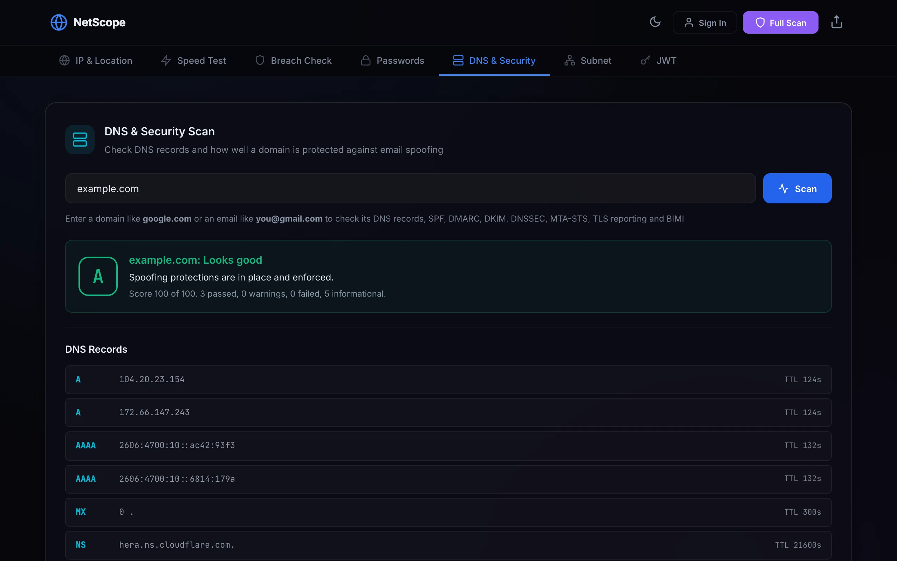
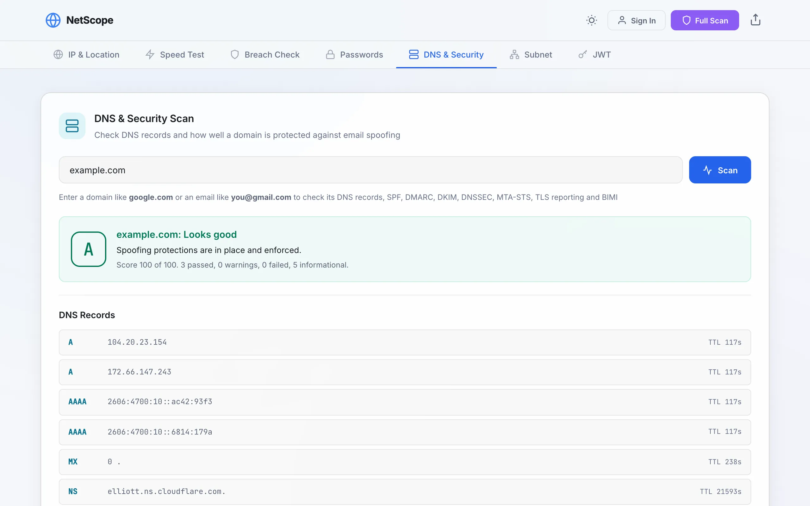

Runs in your browser. No account needed.
Seven network security checks that never hand your secrets to a server.
IP and location, speed test, breach checks, password generator, a graded DNS and email security scan, a subnet calculator and a JWT inspector. One static site, no backend.


How a password check stays private
The breach service is asked about a hash prefix shared with many other passwords. It never learns which one is yours.
- Hash locally. The password is hashed with SHA-1 by the Web Crypto API. The example above is the hash of the word "password".
- Send five characters. Only the first 5 of the 40 hex characters go to
api.pwnedpasswords.com, with padding requested so the response size gives nothing away. - Receive every match for that prefix. The service returns all the hash suffixes it knows under that prefix, each with a breach count.
- Compare locally. The page looks for your 35-character suffix in that list. The password, the full hash and the suffix never leave the page.
checkPwnedPassword in core.js.What you get
Each tool sends the least it can, and says exactly where it goes.
Private by design
The password generator, subnet calculator and JWT inspector make no network request at all. The other tools call public APIs directly from your browser. No analytics, no tracking.
A grade you can act on
The domain scan checks SPF, DMARC, DKIM, DNSSEC, MTA-STS, TLS reporting and BIMI, gives a grade from A to F, and tells you how to fix each problem in plain language.
Install it or just open it
NetScope works in any modern browser and installs as an app. The interface and the local tools keep working offline. Results export as text, email or PDF.
Checked on every push
The privacy rules are tests, not promises. One command runs all of them, and CI runs the same command.
- 138 unit tests
- Hashing, DNS grading, subnet math, token decoding, speed test deadlines and the service worker, on Node's built-in test runner. Read the tests
- No inline script, anywhere
- All three pages ship a Content-Security-Policy that forbids inline script and
eval. The app page lists the exact API hosts it may contact, and a test fails if the code calls one that is not listed. - Pinned third-party code
- Leaflet and jsPDF load with Subresource Integrity hashes, so a changed file on the CDN does not run.
- 0 npm dependencies
- Plain HTML, CSS and JavaScript with no build step. What is in the repository is what the browser runs. See the CI runs
Try it on your own domain
No sign-up. Continue as a guest and every tool works.
Launch app